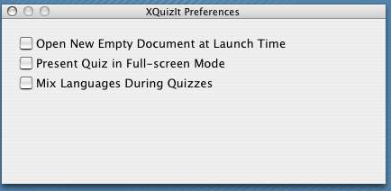

VocableTrainerX has several features that you can customize using the application preferences window, which you can open by selecting Preferences... from the VocableTrainerX menu.
|  |
In particular, if you chooseMix Languages During Quizzes the prompt during the quiz will appear randomly in one language or the other. A full-screen quiz mode is also available.